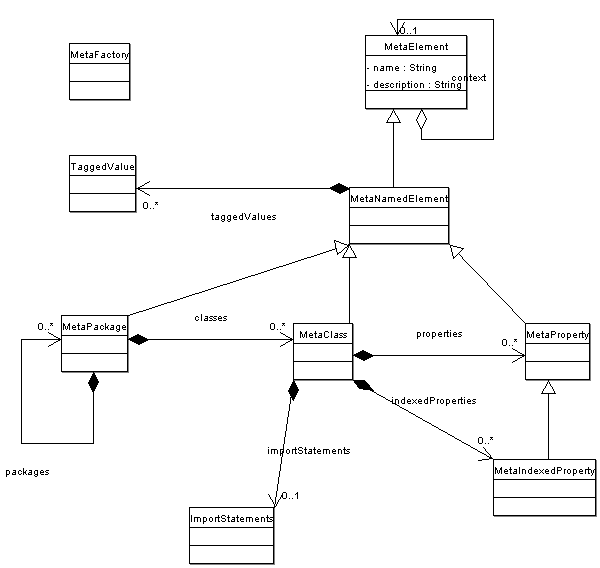

Client server based applications require three software layers. First the persistency layer must connect with the underlying persistent storage, usually a relational database. The connection mechanism should be orthogonal to the application structure. No modifications of the source code should be required. Second data transfer objects must be generated to transmit the business data between the server and the client. Transport protocols are for example CORBA/IIOP, RMI/J2EE, and JMS. Third the business objects of the application must be generated to enable applications developers to code the business logic against them. Often two kinds or business objects exist. One kind of business objects contains all data of an entity. The second one is a lightweight representation mainly used for navigation purposes.
The meta model presented below defines the needed properties of classes and fields to describe an application domain and generate the associated skeletons of a client server application for this domain. The major gains of such a approach are the following.
The meta model complies to the MOF 2.0 standard of the OMG. The code generation process follows the MDA initiative of the OMG. For backward compatibility MOF 1.4 is still supported. Literature is available for these technologies. We are voting member of the Object Management Group and follows the evolution of the standards. All main players support these standards. They are becoming state of the industry practices for architectural design and major software project development.
Our pragmatic and in productive use MDA tool is called pmPDA for "poor man Model Driven Architecture". This name emphasizes the pragmatic approach and the fact that we use establish industrial standards and leading open source tools. The pmMDA is a active code generator. If an error is found in the application, the model is udpated and the target code is generated again. Therefore any modifications of the UML model are propagated to the deployed applications. This behavior is different from the wizard concept which generates only once the source code. After the programmer must add adaptations directly in the source code.
The requirements for the pmMDA are documented in an external document requirements document pmMDA requirements.
The software development process used for the realisation of pmMDA is described in the document project guidelines.
The UML standard provides an extension mechanism called tagged values. A tagged value is a pair containing a key, also called tag and a value. Both elements are strings. This mechanism is extensively used in our pmMDA application. The tagged values are used to provide configuration information to the cartridges. Each registered cartridge registers its tags on the factory. New elements are initialized in the factory with all requested tags and their default values.
Tag names are an extension of the used meta model and must be formally defined and handled. It is the responsibility of the cartridge developers to document their tags.
The current UML modeling tools are not optimal for defining the attributes of a PIM model. All the PIM information are stored as stereotypes and tagged values to respect the semantic of UML 2.0. The pmMDA provides a explorer like user interface, which enables the user to efficiently defines its PIM information. Our framework is highly flexible and can import UML models from any XMI standard compliant UML modeling tool. Therefore you can draw UML diagrams with your favorite modeling tool, import them in pmMDA to edit the PIM model. The result can further be edited with your favorite tool.
The user interface is an explorer based application. The tree of all UML elements is displayed. Views are provided to edit all attributes and tagged values. In place edition is provided in the table views to speed up small correction. The added value of the application is the powerful validation engine which ensures the consistency and completness of the PIM model.
Each UML 2.0 element supports the following contract for itself and for each type of children it owns.
The meta model must contain mapping information to allow cartriges to transform PIM models into PSM models. This information is stored as stereotypes or tagged values.
The following constraints exist for named element.
(getName() != null) && (getName() <= 128)(getDescription() == null) || (getDescription() <= 255)A package has a name and a description. A package supports the following information tags.
| Name | Group | Type | Mandatory | Value | Comment |
|---|---|---|---|---|---|
| ifPackage | bo | TG | No | String | Name of the package containing the interfaces. If not defined the PIM package name is used. |
| boPackage | bo | TG | No | String | Name of the package containing the business object classes. If not defined the PIM package name is used. |
| lwPackage | bo | TG | No | String | Name of the package containing the lightweight business object classes. If not defined the PIM package name is used. |
| shouldBeGenerated | bo | TG | Yes | Boolean | Flag indicating if a PSM should be generated for this package. The default value is no. |
The following dependencies exist between tags.
!shouldBeGenerated implies ((ifPackage == null) && (boPackage
== null) && (lwPackage == null))A class has a name, a description, and a visibility. A class supports the following information tags.
| Name | Group | Type | Mandatory | Value | Comment |
|---|---|---|---|---|---|
| Persistent | db | Stereotype | No | Boolean | If set the stereotype indicates that the class is persistent. |
| tableName | db | TG | No | String | Name of the database table containing the instances of the business object. |
The following dependencies exist between tags.
(Persistent != null) implies (tableName != null)(Persisten != null) implies (exists(property : getProperties() |
property.isPersistent())The following information can be infered from the properties and indexed properties of the class.
properties.exists(property | property.isVisible()) implies
class.isVisible()properties.exists(property | property.isTransmissible()) implies
class.isTransmissible()properties.exists(property | property.isLightweight()) implies
class.isLightweight()A property has a name, a description, a Java type, a visibility. The property can be read-only, write-only or read-write. A property is either mandatory or optionnal. A simple property supports the following information tags.
| Name | Group | Type | Mandatory | Value | Comment |
|---|---|---|---|---|---|
| isBound | bo | TG | Yes | Boolean | Flag defining if the property is bound. The default value is false. |
| isVetoable | bo | TG | Yes | Boolean | Flag defining if the property is vetoable. The default value is false. |
| isLightweight | bo | TG | No | Boolean | Flag defining if the property exists in the lightweight class. |
| isParamOfConstructor | bo | TG | No | Boolean | Flag defining if the property is part of the signature of the specialized constructor. |
| isPersistent | db | TG | Yes | Boolean | Flag defining if the property is persistent. The default value is false. |
| columnName | db | TG | No | String | Name of the column in the table containing the property. |
| isPrimaryKey | db | TG | No | Boolean | Flag defining if the property is a primary key member. |
| isAutoIncremented | db | TG | No | Boolean | Flag defining if theproperty is auto incremented through the persistency layer. |
| isAnonymous | db | TG | No | Boolean | Flag defining if tthe propery is anonymous. |
| isIndexed | db | TG | No | Boolean | Flag defining if the property has an index in the database. |
| isLocking | db | TG | No | Boolean | Flag defining if the property is used for optimistic locking. |
| jdbcType | db | TG | No | String | JDBC type of the column containing the property in the database. |
| size | db | TG | No | String | size of the JDBC type in the database if relevant. |
| conversionClass | db | TG | No | String | Qualified name of the Java class used in OJB to convert between the JDBC and the Java type. |
| isVisible | ui | TG | No | Boolean | Flag defining if the property is visible in the user interface. |
| label | ui | TG | No | String | Label of the property in the user interface. |
| isTransmissible | dv | TG | No | Boolean | Flag defining if the property is transfered between server and client. |
An anonymous property is one used in the database to implement identification and integrity but which is not visible in the application domain layer. The advantage of this approach is that technical identifiers are not visible to the application.
The following dependencies exist between tags.
isPersistent == ((columnName != null) && (jdbcType != null))isPrimaryKey implies isPersistentisAutoIncremented implies isPersistentisIndexed implies isPersistentisLocking implies isPersistent(size != null) implies isPersistent(conversionClass != null) implies isPersistent(label != null) implies labelAn indexed property has a name, a description and a visibility. Three types are associated with it. A target type defines the type of the items contained in the property. A interface type defines which collection type is returned when the list of items is requested. Finally the storage type defines the collection type used to store the items in the business object layers. The UML 2.0 standard defines the target type and the storage type but not the interface type because it is defined in the methods associated with the property.
An indexed property supports the following information tags.
| Name | Group | Type | Mandatory | Value | Comment |
|---|---|---|---|---|---|
| isPersistent | db | TG | Yes | Boolean | Flag defining if the property is persistent. The default value is false. |
| ifCollection | bo | TG | Yes | String | Qualified class name of the interface collection. |
The code generation framework uses the meta model inputs to transform a PIM model into an executable PSM model. The framework uses the open source Jakarta project Velocity to implement the transformation process. The code generation framework provides convenience methods to simplify the generation of artifacts at project, package and class level. Handling of destination directories and Velocity contexts is managed in the framework.
Developers wishing to develop their own cartriges should consult the documentation of the code generator framework. The Velocity documentation can be downloaded from the Jakarta site. Because Velocity is a Java application complex extensions can directly be realized in Java and called from Velocity scripts.
Properties are defined for all cartriges to unify the information available during the code generation phase. The following properties are defined.
| Name | Value | Mandatory | Comment |
|---|---|---|---|
| classBo.prefix | String | No | Prefix appended to all business object classes. Some companies request prefixes for all classes. |
| classBo.postfix | String | No | Postfix appended to all business object classes. In SOA design this prefix
is oftem Impl. |
| classIf.prefix | String | No | Prefix appended to all business object interfaces |
| classIf.postfix | String | No | Postfix appended to all business object interfaces. Some projects uses the
postfix If for all interfaces. |
| classLw.prefix | String | No | Prefix appended to all lightweight business object classes. |
| classLw.postfix | String | No | Postfix appended to all lightweight business object classes. |
The UML model is stored to its persistent representation through the help of a factory. This delegation allows us to support multiple persistent format. The pmMDA tool supports the following external representations.
pmMDA support the conversion from one of the above format to another one. Simply read the data from its file and save it under another format. Only the pmMDA relevant informtion are fully converted.

Two major goals constrain which persistency mechanisms should be selected. First the persistency format must track official standards. This requirement ensures the interoperability with other applications. The second goal is to minimize the implementation costs for each supported persistency format. Therefore all our format reader and writer are based on available open source library. Our application will never develop its own persistency scheme.
The Java bean long term persistency is a standard persistency scheme introduced with JDK 1.4. The classes which should be persisted must simply respect the Java bean conventions. This assumption is reasonable for our application. The reader and writer are provided in the Java bean package part of the J2SE API.
Each subclass of named elements returns all supported tagged values when requesting them. If the tag value is null it means the tag is not defined. Only defined tagged are saved in the persistency representation. The subclass is responsible to insure that all supported tags are always available.
pmMDA is dependant of the following tools.
The open source community has developed similar projects to generate source code from a description often based on UML. The following projects are of interest.
The following information is available about the pmMDA project.
The origin of the pmMDA is code generators developed for C/C++ embedded applications. These code generators were responsible to create the complete menu structure and callbacks declarations for user interfaces. Other generators mapped configuration data to a record based database stored in flash chips. These generators were used in a familly of communication devices used in governemental and tactical scenarios during the nineties. Studies were done with a SDL and Harel state machine code generators. The generator was technically sucessful but to complex to use in daily applications. In particular the available debuggers were not able to cope with applications driven through table of fuction pointers. The generators were already in the public domain and were used in others projects. Later the complete source tree was put under Apache Software License.
Based on the made experience the generators were these products a next generation of code generator to solve the impedance mismatch between object oriented applications and relational databases. These code generators were used in to generate the persistency layer for industrial control and visualization systems and web based device management systems.
The newly developed pmMDA is based on the incredible evolution of software engineering technologies and standards. Leading institutes as OMG, ODMG, JSR groups has pushed the state of the industry technologies. Now pmMDA is used extensively in complex treaty management in the insurance business. Another application field is the generator of Tuxedo based communication servers connecting legacy systems to modern SAP and J2EE applications supporting new insurances products. These applications are deployed worldwide and run 24 hours a day, seven days a week. Expectations exist to use pmMDA in all major developments done in our company.
@since Java 2 Platform, Standard Edition, version 1.5